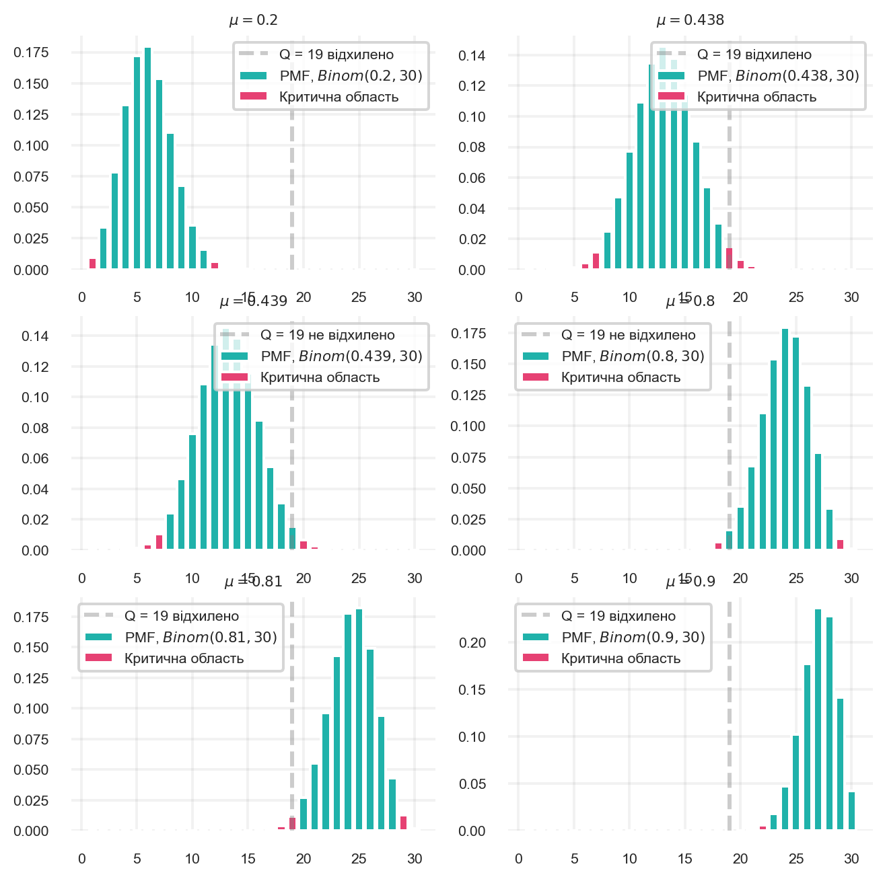
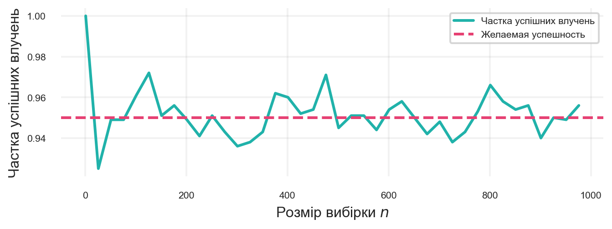

binom_h0 = binom(n=30, p=0.5)
binom_alternative = binom(n=30, p=0.6)
x_grid = np.arange(1, 31)
crit_reg = x_grid >= 20
probs_h0 = binom_h0.pmf(x_grid)
plt.bar(x_grid, probs_h0, color=turquoise, label='PMF, $Binom(0.5, 30)$')
probs_alternative = binom_alternative.pmf(x_grid)
plt.bar(x_grid, probs_alternative, color=slate, label='PMF, $Binom(0.6, 30)$')
plt.bar(x_grid[crit_reg], probs_alternative[crit_reg], color=red_pink, label='Критична область')
plt.legend(fontsize=8)
plt.show()2 Статистична потужність, ефект та довірчі інтервали
2.1 Статистична потужність
2.1.1 Хибно негативні помилки
Раніше під час побудови критеріїв ми звертали увагу тільки на \(\alpha\), рівень значущості критерію. Але цей параметр контролює лише хибнопозитивну помилку (False Positive), а саме ймовірність, що критерій прийме \(H_1\) за умови вірності \(H_0\).
Але є ще один вид помилок, які може допустити критерій — хибно негативні помилки (False Negative). Це випадки, коли критерій приймає \(H_0\) за умови вірності \(H_1\). Це важливо, оскільки вони можуть вказувати на те, що критерій не чутливий до змін, які відбуваються в даних.
Випадок, коли ймовірність FPR \(< \alpha\), але при цьому ймовірність хибно негативні помилки (False Negative Rate, FNR) величезна, можна навести легко. Для цього достатньо ніколи не відкидати гіпотезу, взявши критерій \(S \equiv 0\).
Наведемо приклад, коли помилки False Negative відбуваються не завжди, але критерії є все одно нечутливими.
2.1.2 Критерій пори року
Поставимо гіпотезу про те, що зараз на вулиці літо. Для перевірки можна було б, звісно, подивитися в календар, але ми зробимо інакше.
\[ H_0: \text{ на вулиці літо} \]
\[ H_1: \text{ на вулиці не літо} \]
Подивимося у вікно і визначимо, чи йде там сніг. Якщо він йде, то це непоганий доказ того, що зараз не літо, а отже можна відкинути \(H_0\).
Порахуємо FPR та FNR для цього критерію. Ми знаємо, що влітку сніг іде дуже рідко (ймовірність помилки нижча за \(0.1\%\)), тож це точно критерій рівня значущості \(0.001\), чого зазвичай достатньо для критеріїв.
\[ FPR(S) = P(\text{йде сніг}\ |\ \text{сьогодні літо}) < 0.001 \]
Але що з FNR? Розглянемо конкретний випадок: зараз вересень. Оскільки у вересні майже завжди немає снігу, можна сказати, що FNR більша за \(90\%\), отже, цей критерій насправді мало дієвий.
\[ FNR(S) = P(\text{не йде сніг}\ |\ \text{зараз вересень}) > 0.9 \]
Сформулюємо інший критерій рівня значущості \(\alpha\), причому в цьому разі рівень значущості можна вибрати довільним.
\[ S(\xi) = \begin{cases} 1, \text{ якщо монетка з імовірністю орла } \alpha \text{ випала орлом} \\ 0, \text{ інакше} \end{cases} \]
Виходить, цей критерій випадковий, і він не використовує взагалі жодної інформації про погоду. Однак вимогам до рівня значущості він задовольняє.
\[ FPR = P(\text{випав орел}\ |\ \text{сьогодні літо}) = P(\text{випав орел}) = \alpha \]
Обчислимо FNR.
\[ FNR = P(\text{не випав орел}\ |\ \text{сьогодні не літо}) = P(\text{не випав орел}) = 1 - \alpha \]
За \(\alpha = 0.001\), як у першому випадку, отримуємо ймовірність FNR \(0.999 > 0.9\), тобто за однакового рівня значущості з першим критерієм, другий критерій частіше припускається хибно негативної помилки.
2.1.3 Потужність
У статистиці заведено позитивним результатом вважати відкидання нульової гіпотези, бо зазвичай підтвердження альтернативи означає наявність бізнес-результату. Тому вважається хорошим критерій, який частіше дає змогу виявити бізнес-результат. І рахують тоді не ймовірність хибно негативної помилки, а потужність, що дорівнює ймовірності відкинути нульову гіпотезу за вірності \(H_1\), тобто ймовірність істинно позитивного результату (True Positive Rate, TPR).
\[ \text{Power}_S = 1 - FNR \tag{2.1}\]
Коли альтернатива \(H_1\) складається з множини результатів, потужність розглядають як функцію від результату. Наприклад, можна порахувати потужність першого та другого критеріїв взимку й восени.
\[ \text{Power}_S(\mu) = 1 - FNR(\mu) \]
Перший критерій
\[ \text{Power}_S(\text{травень}) = P(\text{їде сніг } | \text{ травень}) \approx 0.00001 \]
\[ \text{Power}_S(\text{жовтень}) = P(\text{їде сніг } | \text{ жовтень}) \approx 0.1 \]
\[ \text{Power}_S(\text{січень}) = P(\text{їде сніг } | \text{ січень}) \approx 0.5 \]
Другий критерій
\[ \text{Power}_S(\text{травень}) = P(\text{випав орел } | \text{ травень}) = \alpha = 0.001 \]
\[ \text{Power}_S(\text{жовтень}) = P(\text{випав орел } | \text{ жовтень}) = \alpha = 0.001 \]
\[ \text{Power}_S(\text{січень}) = P(\text{випав орел } | \text{ січень}) = \alpha = 0.001 \]
Зазвичай завдання пошуку найкращого критерію формулюється як пошук якомога потужнішого критерію за заданого рівня значущості \(FPR \leqslant \alpha\). Але ми сказали, що потужність — функція від параметра, у нашому випадку від місяця.
Якщо ми застосовуватимемо критерій у січні, то потужнішим буде перший критерій, а якщо в травні, то потужнішим буде другий критерій. Тому потрібно розуміти, коли буде застосовуватися критерій, а отже, ми шукаємо найпотужніший критерій у галузі, яка нас цікавить.
Хоча в реальності в травні потужність обох критеріїв настільки низька, що вони просто не приносять користі, й використовувати їх не має сенсу.
2.2 Потужність для біноміального розподілу
Застосуємо нові знання про потужність для нашої задачі з освітнім сервісом. З бізнес-міркувань ми вже вибрали \(\alpha = 0.05\), а отже, знаємо, що ми неправильно відкидаємо гіпотезу \(H_0:\ \mu = 0.5\) з ймовірністю не більше, ніж \(5\%\). Тобто цим обмежена ймовірність хибно позитивної помилки.
А з якою ймовірністю ми будемо правильно відкидати гіпотезу? І яка в нас буде ймовірність хибно негативної помилки? На це запитання якраз відповість формула потужності.
Згадаймо критерій, за яким ми приймаємо рішення:
\[ Q(\xi) = \sum\limits_{i=1}^n \xi_i - \text{кількість підписок} \]
\[ S = \{Q \geqslant 20\} \]
Тобто якщо отримуємо хоча б \(20\) успішних підписок, то відкидаємо \({H}_0\).
Зауважимо, що потужність залежить від того, яке значення \(\mu\) у нашій генеральній сукупності. Зафіксуємо спочатку параметр \(\mu = 0.6\) й порахуємо потужність для нього. Якщо істинний параметр такий, то статистика \(Q\) має розподіл \(Binom(30, 0.6)\).
Як і раніше, нас цікавить імовірність отримати \(20\) або більше успіхів. Але якщо раніше ми дивилися на неї для розподілу з \(\mu=0.5\) й хотіли, щоб вона була меншою за \(5\%\), то тепер ми дивимося за \(\mu = 0.6\) та прагнемо зробити цю величину якомога більшою. Порівняно з обчисленням FPR формула не зміниться, змінюється тільки \(\mu\)
critical_value = 20
power = 1 - binom(n=30, p=0.6).cdf(critical_value - 1)
fpr = 1 - binom(n=30, p=0.5).cdf(critical_value - 1)
print(f"Хибно позитивна помилка: {fpr:.1%}")
print(f"Потужність: {power:.1%}")Хибно позитивна помилка: 4.9%
Потужність: 29.1%Видно, що потужність близько \(30\%\). Це досить маленьке значення, адже якщо наш продукт прибутковий, то ми побачимо це за допомогою нашого тесту тільки з імовірністю в \(30\) відсотків. Ми легко можемо пропустити ефект.
Що ж можна зробити, щоб зробити потужність вищою? Щоб розібратися, реалізуємо функцію потужності в загальному вигляді.
def get_stat_power(N, mu_h0, mu_alternative, alpha):
'''Обчислює статистичну потужність критерію для біноміального розподілу
Параметри:
N - кількість бернуллієвських експериментів (розмір вибірки)
mu_h0 - імовірність успіху в нульовій гіпотезі
mu_alternative - передбачувана ймовірність успіху в експерименті
alpha - рівень значущості критерію
'''
binom_h0 = binom(n=N, p=mu_h0)
binom_alternative = binom(n=N, p=mu_alternative)
critical_value = binom_h0.ppf(1 - alpha) + 1
return 1 - binom_alternative.cdf(critical_value - 1)
get_stat_power(30, 0.5, 0.6, alpha=0.05)0.2914718612234968Коли в житті ми спостерігаємо якесь явище і бачимо його лише кілька разів, ми не впевнені в тому, що воно не випадкове. Якщо ж бачимо його досить часто, то вже складаємо закономірності. Так і в статистиці. Коли ми подивилися на 30 потенційних підписок, ми помічаємо, що частка доставок більше половини. Але ми все ще не впевнені. Щоб отримати більше впевненості, потрібно провести більше спостережень, тобто знайти більше пробних клієнтів.
Подивимося, що буде, якщо ми проведемо експеримент на 300 клієнтах.
get_stat_power(300, 0.5, 0.6, alpha=0.05)0.9655326717180749Бачимо, що потужність уже дуже близька до \(100\%\). Але провести 300 пробних занять набагато затратніше, ніж 30. І за ресурсами, і за часом. Тому зазвичай балансують між потужністю і тривалістю/витратами експерименту.
Прийнято вважати, що прийнятною для роботи потужністю вважається \(80\%\). Подивимося, як змінюється потужність при зростанні розміру вибірки, і скільки потрібно провести експериментів, щоб детектувати ефект при \(\mu = 0.6\) у \(80\%\) випадків.
n_grid = np.arange(10, 600, 10)
power = get_stat_power(n_grid, 0.5, 0.6, alpha=0.05)
plt.xlabel('Кількість пробних занять')
plt.ylabel('Потжність')
plt.plot(n_grid, power, color=turquoise)
plt.axhline(0.8, ls='--', color=red_pink, label='Потужність = 80%')
min_n = n_grid[power >= 0.8].min()
plt.axvline(min_n, ls='--', color=slate, label=f'N = {min_n}')
plt.legend()
plt.show()Бачимо, що для потужності в \(80\%\) достатньо набрати 160 пробних занять.
А що, якщо ми хочемо детектувати ще менший ефект? Наприклад, якщо хочемо відкидати гіпотезу за \(\mu = 0.51\). Часто поліпшення ймовірності успіху на \(1\%\) може бути значущим для продукту, тому це питання не позбавлене сенсу.
n_grid = np.arange(10, 30000, 59)
power = get_stat_power(n_grid, 0.5, 0.51, alpha=0.05)
plt.xlabel('Кількість пробних занять', fontsize=8)
plt.ylabel('Потжність', fontsize=8)
plt.plot(n_grid, power, color=turquoise)
plt.axhline(0.8, ls='--', color=red_pink, label='Потужність = 80%')
min_n = n_grid[power >= 0.8].min()
plt.axvline(min_n, ls='--', color=slate, label=f'N = {min_n}')
plt.legend()
plt.show()Бачимо, що потрібно понад 15 тисяч клієнтів, щоб детектувати такий ефект! Дуже складно знайти стільки пробних клієнтів. Але потрібно замислитися над питанням, а чи варто це робити? У нашому випадку, якщо ймовірність успіху \(51\%\), то прибуток із замовлень буде невеликий, і вкладення інвесторів, звісно, окупатимуться, але дуже довго. Тому збільшення на \(1%\) для нашого завдання не значуще практично, а отже, не потрібно намагатися набирати 15 тисяч людей, а можна зупинитися і на 160.
Перед кожним експериментом аналітику варто замислюватися над питанням тривалості тесту і кількості учасників. Для цього потрібно зрозуміти:
- Який ефект є для завдання практично значущим?
- Скільки знадобиться випробовуваних, щоб детектувати цей ефект частіше, ніж у \(80\%\) випадків?
З графіків видно, що для детектування меншого ефекту потрібен більший розмір вибірки. Подивимося, як для фіксованого \(N=30\) змінюється потужність для різних параметрів \(\mu\).
mu_grid = np.linspace(0.5, 0.9, 100)
power = get_stat_power(30, 0.5, mu_grid, alpha=0.05)
plt.xlabel('Ймовірність успіху')
plt.ylabel('Потужність')
plt.plot(mu_grid, power, color=turquoise)
plt.axhline(0.8, ls='--', color=red_pink, label='Потужність = 80%')
min_mu = mu_grid[power >= 0.8].min()
plt.axvline(min_mu, ls='--', color=slate, label=f'$\mu = {min_mu:.2f}$')
plt.legend()
plt.show()У нашому експерименті ми добре детектуємо ефект, тільки якщо ймовірність успіху в генеральній сукупності хоча б \(72\%\).
2.3 Мінімальна величина ефекту
Вище на Рисунок 2.4 ми побачили, що з хорошою потужністю понад \(80\%\) ми можемо помітити ефект у \(22\) процентних пункти. Причому це можна порахувати навіть до проведення експерименту. У нашому випадку таке збільшення успішності щодо \(0.5\) цілком можливо, і з ним можна працювати. Але коли аналітики перевіряють зміни, найчастіше очікуваний ефект коливається в районі одного, максимум двох відсотків! Для подібних змін не підійде обрана постановка експерименту, а значить і проводити його не має сенсу.
Тому перед запуском експериментів аналітики повідомляють мінімальну величину ефекту, яку можна задетектувати (Minimal Detectable Effect, MDE). У нашому випадку \(MDE = +22\) процентних пункти.
Більш формально, MDE для гіпотези \(H_0: \mu = \mu_0\) — це мінімальний ефект \(\delta\), за якого критерій рівня значущості \(\alpha\) для перевірки цієї гіпотези за істинного параметра \(\mu = \mu_0 + \delta\) та розміру вибірки \(N\) відкидатиме \({H}_0\) з потужністю більшою, ніж \(1 - \beta\).
Найчастіше беруть \(1 - \beta = 80\%\). Напишемо функцію, яка обчислюватиме MDE підбором.
def binom_test_mde_one_sided(N, mu0, alpha=0.05, min_power=0.8):
delta_grid = np.linspace(0, 1 - mu0, 500)
power = get_stat_power(N, mu0, mu0 + delta_grid, alpha=alpha)
fit_delta = delta_grid[power >= min_power]
return fit_delta[0]
binom_test_mde_one_sided(30, 0.5)0.21843687374749496Результат збігається з обчисленнями за графіком Рисунок 2.4. Тобто ми можемо детектувати ефект у \(22\) процентних пункти.
Зазвичай MDE розраховують не просто так, а нерозривно з ним іде питання про визначення розміру вибірки.
У нашому завданні ми знайшли \(30\) клієнтів, не обчислюючи спочатку, скільки їх знадобиться. Але що якщо отриманий MDE занадто великий й потрібно зробити його меншим, оскільки очікувані зміни набагато менші? Тоді вирішується зворотне завдання, За необхідним MDE визначити обсяг вибірки. Якщо ми говоримо, що хочемо детектувати +10 в.п., тобто 60% успішних підписок, то потрібно знайти 160 тестових клієнтів, це видно з попередніх графіків. Якщо 30 осіб нам, наприклад, шукати місяць, такий тест може затягнутися майже на півроку. Тому варто подумати про те, щоб виділити додаткові ресурси на пошук клієнтів, наприклад, залучити маркетологів.
2.4 Довірчі інтервали
Раніше ми навчилися перевіряти гіпотезу \({H}_0: \mu = 0.5\). Як відповідь ми отримуємо лише вердикт “відкидаємо \({H}_0\)” або “не відкидаємо \({H}_0\)”. Однак у вибірці міститься набагато більше інформації, й ми можемо більше зрозуміти про параметр, ніж порівняння з числом \(0.5\).
Якщо гіпотеза \({H}_0\) не відкидається, це означає, що значення \(\mu = 0.5\) припустиме для нашої вибірки. Отримані значення можна пояснити значенням \(\mu = 0.5\). Але якщо у нас є механізм перевірки для будь-якого \(\mu\), ми можемо для всіх значень дізнатися, які з них допустимі, і отримати множину можливих значень \(\mu\). Така множина називається довірчим інтервалом.
Довірчий інтервал рівня \(1 - \alpha\) — множина значень параметра \(\mu_0\), для яких гіпотеза \(\mu = \mu_0\) не відкидається критерієм рівня значущості \(\alpha\).
З визначення випливає, що різні критерії можуть породжувати різні довірчі інтервали. У цій частині розглянемо, які інтервали породжуються двостороннім критерієм. Для цього з кроком \(0.001\) переберемо значення \(\mu \in [0, 1]\) і перевіримо гіпотези.
def two_sided_criterion_nonsym(n, mu, alpha):
binom_h0 = binom(n=n, p=mu)
c2 = binom_h0.ppf(1 - alpha/2) + 1
c1 = binom_h0.ppf(alpha/2) - 1
return c1, c2
success_cnt = 19
mu_grid = np.arange(0, 1, 0.001)
mu_no_rejection = []
for mu_h0 in mu_grid:
c1, c2 = two_sided_criterion_nonsym(30, mu_h0, alpha=0.05)
if success_cnt > c1 and success_cnt < c2:
mu_no_rejection.append(mu_h0)
print(f'95% довірчий інтервал: [{min(mu_no_rejection)} - {max(mu_no_rejection)}]')95% довірчий інтервал: [0.439 - 0.8]- Функція, що обчислює критичні значення для двостороннього критерію.
- Кількість успішних підписок.
- Сітка значень \(\mu\).
- Список значень \(\mu\), для яких гіпотеза не відкидається.
- Перебір значень \(\mu\).
Отримавши такий інтервал, ми відразу можемо зробити висновок, що гіпотеза \({H}_0: \mu = 0.5\) не відкидається, оскільки \(0.5\) лежить у довірчому інтервалі. Але при цьому відразу зрозуміло, що \(\mu \neq 0.4\) на рівні значущості \(\alpha\).
Звичайно ж, у довірчому інтервалі лежить значення \(\mu = \frac{19}{30}\), для якого \(19\) успіхів — це найбільш правдоподібний результат. При цьому інтервал несиметричний щодо точки \(\frac{19}{30}\).
Подивимося, як можна візуально знайти межу інтервалу. Ми отримали \(19\) успіхів. Для кожного \(\mu_0\) статистика \(Q\) має розподіл \(Binom(30, \mu_0)\). Будемо малювати цей розподіл і дивитися, чи потрапляє \(19\) у критичну область.
mus_h0 = [0.2, 0.438, 0.439, 0.8, 0.81, 0.9]
fig, axes = plt.subplots(3, 2, figsize=(8, 10))
for mu_h0, ax in zip(mus_h0, axes.flatten()):
binom_h0 = binom(n=30, p=mu_h0)
probs = binom_h0.pmf(x_grid)
ax.bar(x_grid, probs, color=turquoise, label=f'PMF, $Binom({mu_h0}, 30)$')
c1, c2 = two_sided_criterion_nonsym(30, mu_h0, alpha=0.05)
crit_reg = (x_grid <= c1) | (x_grid >= c2)
ax.bar(x_grid[crit_reg], probs[crit_reg], color=red_pink, label='Критична область')
is_rejection = success_cnt <= c1 or success_cnt >= c2
ax.axvline(success_cnt, ls='--', label=f'Q = {success_cnt} ' + ('відхилено' if is_rejection else 'не видхилено'), color='gray', alpha=0.4)
rejection_prob = probs[crit_reg].sum()
ax.set_title(f'$\mu = {mu_h0}$', fontsize=8)
ax.legend()

Видно, що зі зростанням \(\mu_0\) гістограма зсувається вправо. І спочатку \(19\) потрапляє в праву критичну область. Потім, починаючи з точки \(0.439\), значення \(19\) вже опиняється поза критичною областю, і тільки з \(\mu_0 = 0.81\) починає потрапляти в ліву критичну область.
Таким чином, ліва межа довірчого інтервалу — це перша точка, коли значення статистики перестало потрапляти до критичної області, а права межа - остання точка, коли значення не потрапляє до правої критичної області.
2.5 Односторонні довірчі інтервали
Насправді, двосторонній критерій потрібен вкрай рідко. Контролювати хибно похитивну помилку нам потрібно тільки для відхилень у бік, корисний для бізнесу. У випадку завдання з освітнім сервісом це отримання більшої конверсії в успіх.
Спробуємо скористатися одностороннім критерієм для побудови довірчого інтервалу.
def make_binom_criterion(n, mu=0.5, alpha=0.05):
binom_h0 = binom(n=n, p=mu)
q = binom_h0.ppf(1 - alpha)
return q + 1
success_cnt = 19
mu_grid = np.arange(0, 1.001, 0.001)
mu_no_rejection = []
for mu_h0 in mu_grid:
crit_val = make_binom_criterion(n=30, mu=mu_h0, alpha=0.05)
if success_cnt < crit_val:
mu_no_rejection.append(mu_h0)
print(f'95% довірчий інтервал: [{min(mu_no_rejection)} - {max(mu_no_rejection)}]')95% довірчий інтервал: [0.467 - 1.0]Коли ми використовували двосторонній інтервал, ми отримали ліву межу \(0.439 < 0.467\). Виходить, що односторонній інтервал з точки зору лівої межі дає нам більше інформації. При цьому з точки зору правої межі ми втрачаємо інформацію зовсім. Вона дорівнює 1 просто тому, що ймовірність не може бути більшою.
Насправді зазвичай на праву межу не дивляться під час аналізу, коли ми шукаємо позитивний ефект.
Припустимо, ми отримали не \(19\) успіхів, а \(22\). Побудуємо 2 види інтервалів.
success_cnt = 22
mu_grid = np.arange(0, 1, 0.001)
mu_no_rejection = []
for mu_h0 in mu_grid:
c1, c2 = two_sided_criterion_nonsym(30, mu_h0, alpha=0.05)
if success_cnt > c1 and success_cnt < c2:
mu_no_rejection.append(mu_h0)
print(f'Двосторонній 95% довірчий інтервал: [{min(mu_no_rejection):.3f} - {max(mu_no_rejection):.3f}]')Двосторонній 95% довірчий інтервал: [0.542 - 0.877]success_cnt = 22
mu_grid = np.arange(0, 1.001, 0.001)
mu_no_rejection = []
for mu_h0 in mu_grid:
crit_val = make_binom_criterion(n=30, mu=mu_h0, alpha=0.05)
if success_cnt < crit_val:
mu_no_rejection.append(mu_h0)
print(f'Односторонній 95% довірчий інтервал: [{min(mu_no_rejection):.3f} - {max(mu_no_rejection):.3f}]')Односторонній 95% довірчий інтервал: [0.571 - 1.000]За обома довірчими інтервалами ми робимо висновок, що конверсія значимо відрізняється від \(50\%\). Але односторонній інтервал дає кращу нижню оцінку на ймовірність успіху. Ми можемо зрозуміти, що наша конверсія більша за \(57\%\). А інформація з двостороннього інтервалу про те, що ймовірність менша за \(88\%\) не додає нам користі.
Навіщо ж ми тоді взагалі використовуємо двосторонній інтервал? Щоб це зрозуміти, подивимося, як виглядають візуально межі для одностороннього інтервалу.
fig, axes = plt.subplots(3, 2, figsize=(8, 10))
for mu_h0, ax in zip(mus_h0, axes.flatten()):
binom_h0 = binom(n=30, p=mu_h0)
probs = binom_h0.pmf(x_grid)
ax.bar(x_grid, probs, color=turquoise, label=f'PMF, $Binom({mu_h0}, 30)$')
c = make_binom_criterion(30, mu_h0, alpha=0.05)
crit_reg = (x_grid >= c)
ax.bar(x_grid[crit_reg], probs[crit_reg], color=red_pink, label='Критична область')
is_rejection = success_cnt >= c
ax.axvline(success_cnt, ls='--', label=f'Q = {success_cnt} ' + ('відхилено' if is_rejection else 'не відхилено'), color='gray', alpha=0.4)
rejection_prob = probs[crit_reg].sum()
ax.set_title(f'$\mu = {mu_h0}$', fontsize=8)
ax.legend()
Порівняно з Рисунок 2.5 ми бачимо, що права критична область стала більшою через те, що там тепер знаходиться не \(2.5\%\), а \(5\%\) від усіх значень. При цьому лівої критичної області просто не існує, тому за великих \(\mu\) не відбувається потрапляння \(19\) до неї, а значить ми не відкидаємо гіпотезу.
Зауважимо, що якби ми будували двосторонній інтервал, але з удвічі більшою \(\alpha\), потрапляння в праву критичну область траплялися б за тих самих \(\mu\), що й в односторонньому критерії. Тому часто для пошуку односторонньої межі будують двосторонній довірчий інтервал із більшою \(\alpha\), ігноруючи при цьому праву межу. Це зручно, оскільки можна користуватися тільки однією функцією для критерію.
Перевіримо, що вийде за \(\alpha = 0.1\).
success_cnt = 19
mu_grid = np.arange(0, 1, 0.001)
mu_no_rejection = []
for mu_h0 in mu_grid:
c1, c2 = two_sided_criterion_nonsym(30, mu_h0, alpha=0.1)
if success_cnt > c1 and success_cnt < c2:
mu_no_rejection.append(mu_h0)
print(f'95% довірчий інтервал: [{min(mu_no_rejection):.3f} - {max(mu_no_rejection):.3f}]')95% довірчий інтервал: [0.467 - 0.778]Бачимо, що отримали таку саму ліву межу, як і в односторонньому інтервалі.
2.6 Властивості довірчих інтервалів
Згадаймо визначення довірчого інтервалу.
Нехай є критерій \(S = \{Q(\xi) \leqslant C\}\) рівня значущості \(\alpha\) для перевірки гіпотези \({H}_0: \mu = \mu_0\), \(Q\) — статистика критерію, а \(q\) — її реалізація на конкретній вибірці \(\xi = \xi_1, \dots, \xi_n\). Тоді довірчим інтервалом називається множина таких \(\mu_0\), на яких критерій \(S\) не відкидає гіпотезу \({H}_0: \mu = \mu_0\).
Процедура підрахунку інтервалу — це довгий перебір значень із деяким кроком. Але це все ще залишається деякою функцією від вибірки, тобто статистикою й випадковою величиною, причому її розподіл залежить від статистики \(Q\), а отже, і від початкової вибірки, та від параметра \(\mu\) у генеральній сукупності.
Позначимо межі інтервалу за \(\mathcal{L}(Q), \mathcal{R}(Q)\) — статистики критерію, які відповідають лівій та правій межі інтервалу.
2.6.1 Ймовірність попадання в інтервал
Яким би не було істинне значення \(\mu = \mu_0\), ймовірність того, що воно перебуває між \(\mathcal{L}(Q)\) та \(\mathcal{R}(Q)\), не нижча, ніж \(1 - \alpha\). Значення \(1 - \alpha\) називається рівнем довіри довірчого інтервалу.
\[ P(\mathcal{L}(Q) < \mu_0 < \mathcal{R}(Q)) \geqslant 1 - \alpha \tag{2.2}\]
Важливо, що випадковість тут прихована саме в \(\mathcal{L}\) і \(\mathcal{R}\), а не в \(\mu_0\). Параметр \(\mu_0\) невідомий, але ми припускаємо його константним і не випадковим.
Перевіримо справедливість цієї властивості. Для цього зафіксуємо \(\mu_0\) й проведемо множину експериментів:
- Генеруємо вибірку з розподілу з параметром \(\mu_0\).
- Обчислюємо статистику \(q\).
- Рахуємо довірчий інтервал для \(\alpha = 0.05\).
Перевіряємо, що частка випадків, коли параметр \(\mu_0\) опинився всередині інтервалу, хоча б \(95\%\)
import time
start_time = time.time()
def my_binomial_confint(n, alpha, q):
mu_grid = np.arange(0, 1.1, 0.1) # np.arange(0, 1.001, 0.001)
mu_no_rejection = []
for mu_h0 in mu_grid:
c1, c2 = two_sided_criterion_nonsym(30, mu_h0, alpha=0.05)
if q > c1 and q < c2:
mu_no_rejection.append(mu_h0)
return min(mu_no_rejection), max(mu_no_rejection)
N_EXPERIMENTS = 1000
SAMPLE_SIZE = 30
latent_mu = 0.5
binom_true = binom(n=SAMPLE_SIZE, p=latent_mu)
confint_fail_cases = 0
for i in range(N_EXPERIMENTS):
q = binom_true.rvs()
L, R = my_binomial_confint(n=SAMPLE_SIZE, alpha=0.05, q=q)
if L < latent_mu < R:
pass
else:
confint_fail_cases += 1
success_cases = round(100 * (N_EXPERIMENTS - confint_fail_cases) / N_EXPERIMENTS, 2)
print(f"Відсоток успішних випадків: {success_cases}%")
end_time = time.time()
print(f"Час виконання: {end_time - start_time:.4f} секунди")Відсоток успішних випадків: 61.4%
Час виконання: 4.2039 секундиЗазначимо, що цей код працював понад 5 хвилин. Це через те, що під час кожного експерименту потрібно побудувати довірчий інтервал, а значить перевірити 1000 можливих параметрів \(\mu_0\).
Бачимо, що властивість виконалася. Ми очікували хоча б \(95\%\) влучень, отримали навіть \(61.4\%\). Насправді це значно більше, ніж ми очікували. Це відбувається через дискретність розподілу. З тієї ж причини під час пошуку критичної області ми не могли вибрати стовпці із сумарною висотою рівно \(\alpha\).
2.6.1.1 Доведення
Під час формулювання властивості ми припускаємо, що є деяка \(\mu_0\) — ймовірність успіху в генеральній сукупності. Коли ми проводимо штучний експеримент, ми фіксуємо її й можемо вважати істинною \(\mu\).
Щоразу ми генеруємо \(Q \sim Binom(\mu_0, 30)\) й перевіряємо, чи потрапила \(\mu_0\) у довірчий інтервал. Намалюємо розподіл статистики \(Q\), який уже нам знайомий. Намалюємо й область ймовірності \(\leqslant \alpha\), як ми робили це раніше.
mu0 = 0.5
binom_mu0 = binom(n=30, p=mu0)
probs = binom_mu0.pmf(x_grid)
plt.bar(x_grid, probs, color=turquoise, label=f'PMF, $Binom({mu0}, 30)$')
c1, c2 = two_sided_criterion_nonsym(30, mu0, alpha=0.05)
crit_reg = (x_grid >= c2) | (x_grid <= c1)
plt.bar(x_grid[crit_reg], probs[crit_reg], color=red_pink, label='Критична область')
plt.legend()
plt.show()Нехай реалізувалося значення статистики \(q\). За такою вибіркою можна побудувати довірчий інтервал на \(\mu\). Він буде якось розташований, але зараз нас цікавить, чи потрапить у нього \(\mu_0\). За визначенням потрапляння в інтервал відбудеться, якщо не відкидається гіпотеза \({H}_0:\ \mu = \mu_0\). Але тоді за справедливості \({H}_0\) статистика має той розподіл, що і на малюнку. І гіпотеза відкидається тільки в разі потрапляння в критичну область, а це трапляється з ймовірністю \(\leqslant \alpha\).
Отже, з ймовірністю хоча б \(1 - \alpha\) \(\mu_0\) перебуватиме в довірчому інтервалі.
Часто так й вводять визначення довірчого інтервалу. Для вибірки \(\xi_1, \dots, \xi_n\) — це така пара статистик \(\mathcal{L}(\xi)\) і \(\mathcal{R}(\xi)\), що хоч яким би не було \(\mu_0\),
\[ P(L(\xi) < \mu_0 < R(\xi)) \geqslant 1 - \alpha \tag{2.3}\]
де \(L(\xi)\) і \(R(\xi)\) — статистики, що залежать від вибірки. Знову звертаємо увагу, що випадковість тут прихована не в параметрі \(\mu_0\), а в статистиках від вибірки.
2.6.2 Довірчий інтервал Вілсона
Розглянутий зараз алгоритм побудови довірчого інтервалу працює занадто довго. У Python є функції, які дозволяють швидше розрахувати інтервал. Наприклад, можна скористатися методом Вілсона і функцією proportion_confint.
Повторимо експерименти з новим типом довірчого інтервалу, тут можемо дозволити більше реалізацій вибірки, оскільки інтервал рахується недовго.
from statsmodels.stats.proportion import proportion_confint
start_time = time.time()
N_EXPERIMENTS = 1000
SAMPLE_SIZE = 30
latent_mu = 0.5
binom_true = binom(n=SAMPLE_SIZE, p=latent_mu)
confint_fail_cases = 0
for i in range(N_EXPERIMENTS):
q = binom_true.rvs()
L, R = proportion_confint(
count=q,
nobs=SAMPLE_SIZE,
alpha=0.05,
method='wilson'
)
if L < latent_mu < R:
pass
else:
confint_fail_cases += 1
success_cases = round(100 * (N_EXPERIMENTS - confint_fail_cases) / N_EXPERIMENTS, 2)
print(f"Відсоток успішних випадків: {success_cases}%")
end_time = time.time()
print(f"Час виконання: {end_time - start_time:.4f} секунди")Відсоток успішних випадків: 96.6%
Час виконання: 0.2021 секундиЗауважимо, що наше \(\mu\) може знаходитись в довірчому інтервалі менше, ніж у \(95\%\) випадків. Це відбувається через те, що швидкі методи працюють наближено, оцінюючи розподіл статистики при збільшенні розміру вибірки. Чим розмір вибірки більший, тим ближчим буде інтервал до \(95\%\)-ного.
Залежність частки успішних влучень \(\mu\) у довірчий інтервал від розміру вибірки зобразимо на Рисунок 2.8.
n_grid = np.arange(1, 1000, 25).tolist()
interval_success_rate = []
for n in n_grid:
confint_fail_cases = 0
for i in range(N_EXPERIMENTS):
binom_true = binom(n=n, p=latent_mu)
q = binom_true.rvs()
L, R = proportion_confint(
count=q,
nobs=n,
alpha=0.05,
method='wilson'
)
if L < latent_mu < R:
pass
else:
confint_fail_cases += 1
interval_success_rate.append(1 - confint_fail_cases / N_EXPERIMENTS)
plt.xlabel('Розмір вибірки $n$')
plt.ylabel('Частка успішних влучень')
plt.plot(n_grid, interval_success_rate, label='Частка успішних влучень', color=turquoise)
plt.axhline(0.95, ls='--', label='Желаемая успешность', color=red_pink)
plt.legend()
plt.show()

Видно, що на будь-якому розмірі вибірки під час використання інтервалу Вілсона можна отримати менше \(95\%\) влучень, але що більший розмір вибірки, то менше графік відхиляється від \(95\%\).